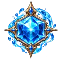
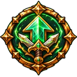
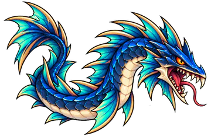
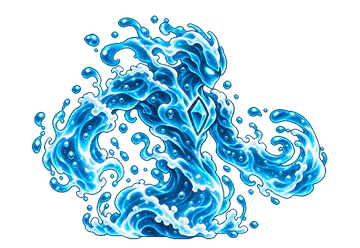
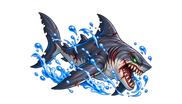
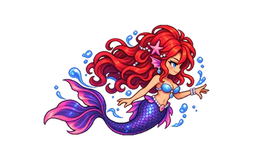

Elemental Knights › Elementos › Água
Elemento
Água
O mestre das marés domina o ritmo da batalha. Em vez de vencer rapidamente, prolonga o combate até assumir o controle total. Sobreviver, adaptar-se e crescer durante a luta. Quanto mais a batalha se estende, maior a vantagem.
Estratégia
Como jogar com a Água
A Água vence no tempo. Garoa Determinante faz a Esquiva crescer a cada turno, sem limite, e a Bomba d'Água Gigante transforma essa Esquiva em dano: +3,5% para cada 1% de Esquiva ganha na batalha.
Aplique Lentidão com Respingo ou Água Salgada e solte a Onda de Água: contra um alvo com Lentidão ela causa 310% e zera a Barra de Ação dele. A Ultimate, Domínio das Marés, faz todas as suas habilidades aplicarem Lentidão por 12 segundos.

Contra FogoSuas Habilidades causam +50% de dano.

Contra RaioSuas Habilidades causam −50% de dano.
Na Estratégia Elemental você escolhe 2 Passivas e 3 Ativas da Água, e a Ultimate ocupa um dos 3 lugares de Ativa. Lutar com a Água aumenta a sua Maestria nela.
Efeito especial
Lentidão
Lentidão Intensidade I a V
Reduz a Velocidade: a Barra ATB do alvo enche mais devagar. Nos níveis altos, também reduz a Evasão.
Sempre ativas
As 6 Passivas
Funcionam sozinhas durante a batalha. Você leva 2 delas.
-
Garoa Determinante
- A cada turno seu: +4% de Esquiva (sem limite, cresce a batalha toda)
- A cada 5 turnos seus: +6% de Ataque (também acumula)
-
Inundação
- No início da batalha, aplica Lentidão em todos os inimigos por 7 s
- +1% de Defesa e +1% de Esquiva por inimigo afetado (máx. +3%)
-
Águas Torrenciais
- Sempre que receber um efeito negativo: +2% de Esquiva
- Acumula até 15 vezes (máx. +30%)
-
Parede de Água
- A cada 5 turnos seus, o próximo dano recebido é bloqueado por completo
- Quem atacou recebe Lentidão
-
Pressão das Profundezas
- Inimigo que errar um ataque contra você recebe +2% de dano por 6 s
- Acumula até 5 vezes (máx. +10%)
-
Corrente Contínua
- Sempre que uma habilidade ativa sua acertar um inimigo: +2% de Velocidade por 8 s
- Acumula até 5 vezes (máx. +10%)
Você decide a hora
As 8 Ativas
Entram na Fila de Habilidades e são usadas quando a Barra ATB enche. Você leva 3, incluindo a Ultimate.
-
Domínio das Marés Ultimate
- Por 12 s: +20% de Esquiva e +20% de Velocidade
- Todas as suas habilidades ativas aplicam Lentidão (garantida)
- Cada ataque que você desviar reduz em 1 s a recarga de todas as suas habilidades
Recarga: 18 s
-
Respingo
- Causa 80% do Ataque em 1 inimigo e aplica Lentidão por 7 s (garantida)
- Se o alvo já estiver com Lentidão: 150% e renova a duração
Recarga: 12 s
-
Enxurrada
- Atinge até 3 inimigos em sequência: 140%, 90% e 40% do Ataque
- Aplica Lentidão no primeiro atingido (garantida)
Recarga: 14 s
-
Água Salgada
- Causa 100% do Ataque no inimigo mais distante e aplica Lentidão (garantida)
- Se o alvo já estiver com Lentidão: -20% de Defesa e -10% de Esquiva nele por 8 s
Recarga: 8 s
-
Reflexão
- Devolve a 1 inimigo 130% do último dano que você recebeu
- Contra inimigos de Raio: aplica Lentidão (garantida)
Recarga: 15 s
-
Onda de Água
- Causa 255% do Ataque em 1 inimigo
- Se o alvo estiver com Lentidão: 310% e zera a Barra de Ação dele
Recarga: 18 s
-
Bomba d'Água Gigante
- Causa 175% do Ataque em 1 inimigo
- +3,5% de dano para cada 1% de Esquiva que você ganhou na batalha
Recarga: 9 s
-
Maré Baixa
- Por 8 s: +20% de Esquiva
- Cada ataque que você desviar reduz em 1 s a recarga de todas as suas habilidades
Recarga: 8 s


Bestiário
Monstros da Água
Para enfrentá-los, entre com o Raio. Os 10 monstros da Água em Entherya, do mais forte ao mais fraco:

Serpente da Cachoeira
Tier 6 · Chefe da etapa 4-2

Elemental de Água
Tier 5 · Chefe da etapa 2-1

Tubarão Rei
Tier 4

Sereia do Rio
Tier 3
- Guardião do Abismo T7
- Serpente da Cachoeira T6 · Chefe 4-2
- Carangueijo de Coral T5
- Elemental de Água T5 · Chefe 2-1
- Bolha Aquática T4
- Tubarão Rei T4
- Sereia do Rio T3
- Bandido Novato T2
- Peixe-Lâmina T2
- Sapo das Correntezas T1
Perguntas frequentes
Água: dúvidas comuns
Qual Elemento vence a Água em Elemental Knights?
O Raio vence a Água: as habilidades do Raio causam +50% de dano contra ela. Já as habilidades da Água causam −50% contra o Raio.
Contra qual Elemento a Água é forte?
A Água vence o Fogo: suas habilidades causam +50% de dano contra inimigos do Fogo.
O que faz a Lentidão?
A Lentidão é o efeito da Água, com Intensidade de I a V. Reduz a Velocidade: a Barra ATB do alvo enche mais devagar. Nos níveis altos, também reduz a Evasão.
Qual é a Ultimate da Água?
Domínio das Marés: Por 12 s: +20% de Esquiva e +20% de Velocidade; Todas as suas habilidades ativas aplicam Lentidão (garantida); Cada ataque que você desviar reduz em 1 s a recarga de todas as suas habilidades; Recarga: 18 s.
Em quais mapas a Água fica mais forte?
Floresta Densa, Praia Leste: nesses terrenos a Água causa +10% de dano e tem +2% de chance de aplicar Lentidão.
Quais Chefes são da Água?
No Modo História: Elemental de Água (etapa 2-1), Serpente da Cachoeira (etapa 4-2).
Os seis Elementos
Conheça os outros

Escolha o seu Elemento
Elemental Knights é um RPG de estratégia para Android, grátis, em pixel art. As novidades e os convites para testar o jogo saem primeiro no Instagram.